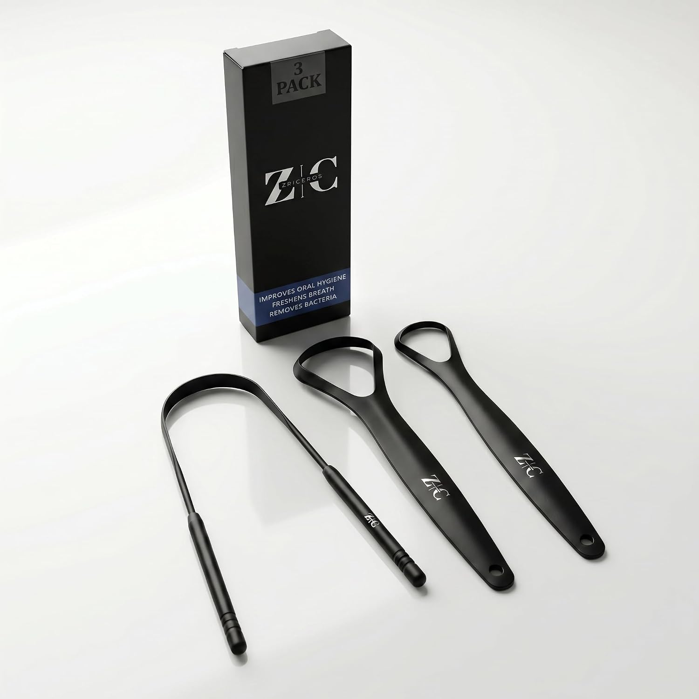
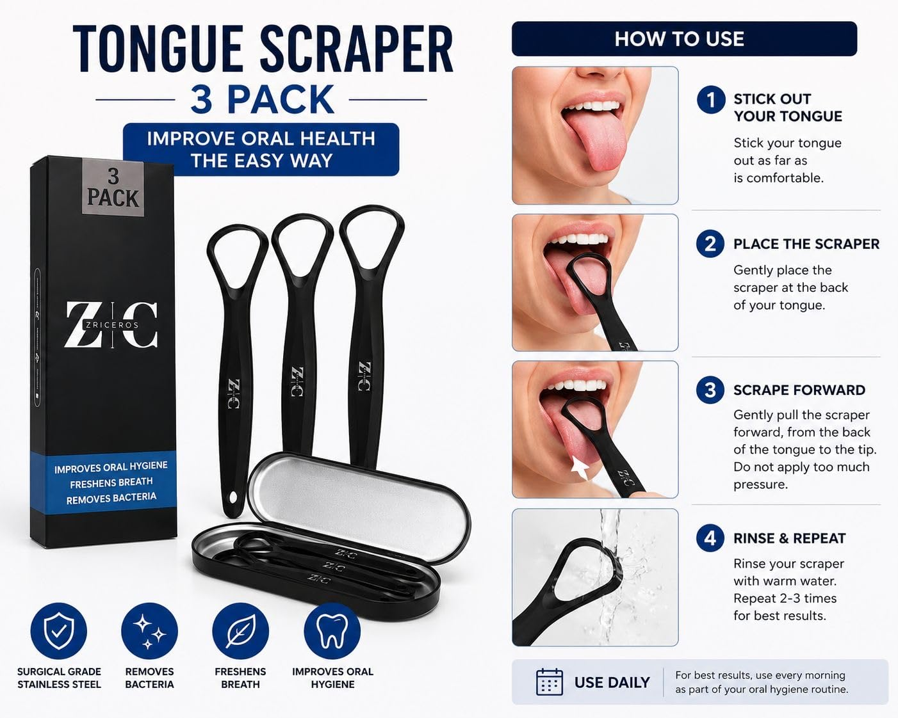
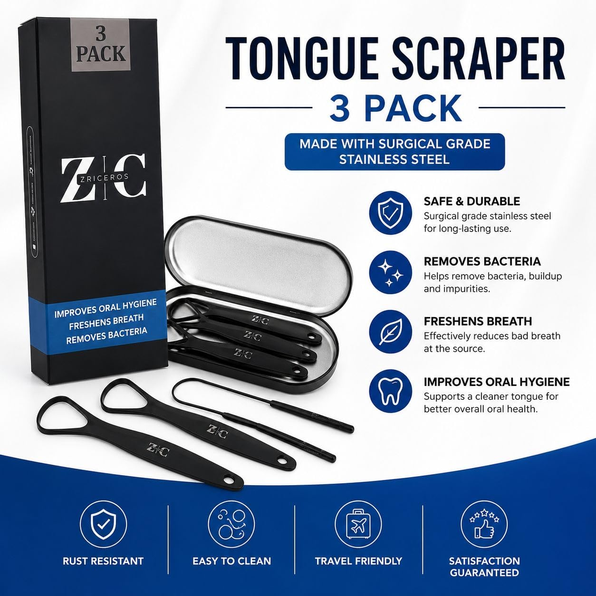
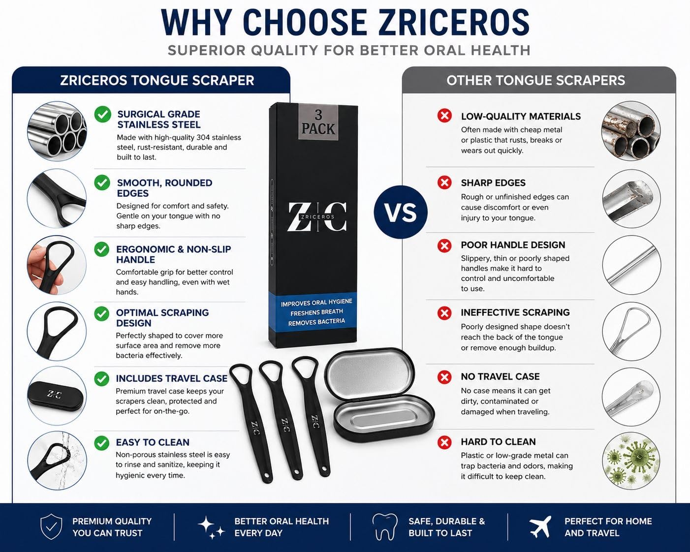

Producto: Zriceros Tongue Scraper, 3-Pack, 304 acero inoxidable grado quirúrgico, incluye estuche metálico de viaje, color negro. Precio actual: $10.99 ($3.66/unidad).
Problema #1 (no es de copy): el listing tiene 0 reviews. El competidor líder (MasterMedi) tiene 102,300 reviews al mismo precio por unidad aproximado. Ningún título o bullet va a compensar esa brecha de confianza por sí solo — el SEO mejora el tráfico, las reviews mejoran la conversión.
Problema #2: el campo Brand en Seller Central está mal configurado como "Generic" en vez de "Zriceros". Esto bloquea Brand Registry, A+ Content, Storefront y búsquedas por marca.
Lo que se entrega en este documento: título, bullets, descripción y backend search terms listos para copiar y pegar; tabla de metadata completa para Seller Central; comparación de precios contra 12 competidores directos; auditoría de las 4 imágenes ya producidas; y una revisión crítica de una propuesta alternativa (de otra IA) que contenía afirmaciones falsas sobre el producto, ya descartadas.
| Prioridad | Acción | Dónde | Responsable | Estado |
|---|---|---|---|---|
| ALTA | Corregir Brand Name: "Generic" → "Zriceros" | Seller Central → Manage Inventory → Edit → Brand Name | — | ☐ Pendiente |
| ALTA | Pegar nuevo título (sección 3) | Seller Central → Edit Listing → Title | — | ☐ Pendiente |
| ALTA | Pegar los 5 bullets (sección 4) | Seller Central → Edit Listing → Key Product Features | — | ☐ Pendiente |
| MEDIA | Pegar nueva descripción (sección 5) | Seller Central → Edit Listing → Product Description | — | ☐ Pendiente |
| MEDIA | Pegar backend search terms (sección 6) | Seller Central → Edit Listing → Search Terms (pestaña "Keywords") | — | ☐ Pendiente |
| MEDIA | Completar atributos faltantes (sección 7) | Seller Central → Edit Listing → More Details / Variations | — | ☐ Pendiente |
| ALTA | Lanzar programa de reviews (Vine o insert con QR en la caja) | Seller Central → Amazon Vine, o Diseño de empaque | — | ☐ Pendiente |
| BAJA | Confirmar Country of Origin con el proveedor | Coordinar con fábrica/proveedor | — | ☐ Pendiente |
| BAJA | Producir 2-3 imágenes faltantes (ver sección 9) | Diseño / fotografía de producto | — | ☐ Pendiente |
Zriceros Tongue Scraper for Adults (3 Pack) - 304 Surgical Grade Stainless Steel Tongue Cleaner with Travel Case, Reduces Bad Breath & Bacteria, Black Ergonomic Metal Tongue Brush, Rust-Resistant
195 caracteres (límite Amazon: 200)
STOP BAD BREATH BEFORE IT STARTS Brushing your teeth isn't enough. A large share of bad breath odor comes from bacteria and food debris trapped in the coating on your tongue — a spot your toothbrush barely touches. The Zriceros Tongue Scraper is designed to remove that buildup quickly and effectively, so you start every day with a genuinely clean, fresh mouth. WHY 304 SURGICAL-GRADE STAINLESS STEEL Unlike plastic tongue scrapers that wear out, crack, or hold onto bacteria in tiny grooves, our 304 surgical-grade stainless steel design stays smooth and hygienic wash after wash. It won't rust, won't bend out of shape, and won't degrade with hot water — making it a long-term upgrade to your oral care routine instead of a disposable one. The ergonomic loop handle features a textured, non-slip grip for secure control even with wet hands. HOW TO USE 1. Stick out your tongue as far as is comfortable. 2. Gently place the scraper at the back of your tongue. 3. Pull the scraper forward toward the tip — do not apply too much pressure. 4. Rinse the scraper with warm water and repeat 2-3 times for best results. WHAT'S INCLUDED 3 stainless steel tongue scrapers and 1 sleek metal travel case — enough to keep one at home, one for travel, and one as a spare or to share with a family member. CARE INSTRUCTIONS Rinse with water after each use and wipe dry. Store in the included travel case to keep it clean between uses. Avoid abrasive cleaners that could scratch the surface. A small daily habit, a noticeably fresher result. Add the Zriceros Tongue Scraper to your cart and make fresh breath part of your morning, every morning.
Sin comas, sin repetir palabras del título/bullets, separadas por espacios. Amazon combina automáticamente.
halitosis odor cure tounge tougne scrapper ayurvedic copper alternative kit dental gift idea portable toothbrush reusable biofilm tartar wellness essentials detox natural stocking stuffer men women tin pouch carry
213 bytes (límite Amazon: 250 bytes)
| Campo | Valor recomendado | Estado |
|---|---|---|
| Brand Name | Zriceros | ⚠ Corregir — actualmente "Generic" |
| Manufacturer | Zriceros | ✔ Confirmado por logo de empaque |
| Item Form | Scraper | ✔ Confirmado |
| Material Type (free text) | 304 Stainless Steel (Surgical Grade) | ✔ Confirmado por infografía del fabricante |
| Color | Black | ✔ Confirmado por fotos reales |
| Number of Items / Unit Count | 3 | ✔ Confirmado |
| Included Components | 3x Tongue Scraper + 1x Metal Travel Case | ✔ Confirmado por fotos |
| Target Audience / Age Range | Adult | ✔ Confirmado por bullet actual |
| Special Feature | Rust Resistant, Reusable, Non-Slip Handle, Travel Case Included | ✔ Confirmado por infografía del fabricante |
| Style / Shape | Ergonomic loop handle, rounded smooth edge | ✔ Confirmado por fotos reales |
| Recommended Uses For Product | Oral Care, Daily Hygiene, Travel | ✔ Coherente con categoría e infografía |
| Country of Origin | — | ⏳ No visible en fotos — confirmar con proveedor (requerido para compliance) |
| Item Package Dimensions | 6.08 x 3.43 x 0.65 in | ✔ Confirmado (Product Details) |
| Item Weight | 3.21 oz | ✔ Confirmado (Product Details) |
| ASIN | B0GVZF1GN7 | ✔ Confirmado |
Relevado directamente de la categoría Tongue Brushes, Scrapers & Cleaners en Amazon US. Útil para pricing y para entender qué claims usa cada competidor.
| Competidor | Formato | Precio/unidad | Reviews | Diferenciador en título |
|---|---|---|---|---|
| MasterMedi (Top Rated, #1) | 2-Pack + Travel Case | $4.98 | 102,300 | "Multicolor Travel Cases", "100% Stainless Steel" |
| Mouthology | 2-Pack | $5.00 | 85,500 | Repite 6 sinónimos de "scraper/cleaner/scrubber" en el título |
| Cafhelp | 2-Pack + 2 Cases | $2.50 | 18,600 | "304 Surgical Stainless Steel", "Adults and Kids" |
| GuruNanda | 2-Pack | $2.49–$2.50 | 14,900 | "Medical Grade 100% Stainless Steel", "Travel Friendly" |
| drTung's | 1-Pack + Case | $9.99 | 11,800 | "Comfort Grip Handle", "for Adults & Kids" |
| MasterMedi Copper | 2-Pack + Case | $6.00 | 9,686 | Variante de cobre, precio premium |
| MasterMedi single | 1-Pack + Case | $5.49 | 8,300 | Entrada de gama más barata de la marca líder |
| Tongue Brush 3-Pack (genérico) | 3-Pack colores | $2.00 | 4,300 | Multicolor, precio muy agresivo |
| PRIMALS | 1-Pack Cobre | $27.99 | 98 | "Ayurvedic", "Eco-Friendly", posiciona premium/nicho |
| Davids | 1-Pack | $19.95 | 190 | "Made in USA", precio premium justificado por origen |
| Tung Brush | 2-Pack | $6.24 | 2,300 | "USA Made", "Halitosis Defense" |
| Zriceros (tu producto) | 3-Pack + Case | $3.66 | 0 | Precio por unidad competitivo, pero sin reviews |
Lectura rápida (vs. todo el mercado): tu precio por unidad ($3.66) está bien posicionado frente a los 2-packs líderes — más caro que las opciones ultra-económicas (Cafhelp, GuruNanda ~$2.50) pero más barato que MasterMedi/Mouthology (~$5.00). El espacio premium ($19.95–$27.99 con "Made in USA" o "Ayurvedic/Copper") está vacío de competencia fuerte si en el futuro quieren una línea premium.
Pero esa lectura cambia si comparamos solo contra el mismo formato exacto. El equipo relevó las 4 páginas de la categoría (≈96 productos de 636 resultados totales) y aparecieron varios competidores que venden, como nosotros, 3-Pack + estuche de acero inoxidable — el comparable más directo posible:
| Competidor (3-Pack + Case) | Precio | Precio/unidad | Reviews | Bought/mes | Nota |
|---|---|---|---|---|---|
| MasterMedi (Pack of 3 with 1 Case) | $7.99 | $2.66 | 78 | 300+ | Es el mismo brand #1 del mercado (102K reviews en su 2-pack) ofreciendo 3-pack más barato que el nuestro |
| CATACC PRO 3 Pack + Case | $5.97 | $1.99 | 3,200 | 400+ | El listing dice "3 Pack" en el título pero "4 Piece Set" en la variante — inconsistencia del competidor, no nuestra |
| Manylux 3 Pack + Travel Case | $5.99 | ~$2.00 | 29 | 100+ | Muy pocas reviews a pesar del precio agresivo |
| Tongue Brush 3-Pack (colores) | $5.99 | $2.00 | 4,300 | 3K+ | Buen volumen, pero parece plástico/colorido, no 100% acero — diferenciador de material sigue siendo nuestro |
| 3 PCS Metal YLYL | $4.39 | $4.39* | 7,400 | 1K+ | Sin estuche; *precio por unidad inconsistente en el listing original |
| Y-Kelin 3 Pack (doble cara) | $7.98 | ~$2.66–$3.99* | 402 | 400+ | Diseño "ultra-soft" — probablemente no 100% metal; *el propio listing muestra matemática inconsistente |
| Supersmile Ripple Edge, 3 Count | $9.00 | $3.00 | 703 | 300+ | Posicionamiento premium, sin estuche mencionado |
| Zriceros (nuestro) | $10.99 | $3.66 | 0 | — | El más caro por unidad de todo el segmento 3-pack relevado |
Esto corrige la conclusión anterior: contra 2-packs genéricos parecíamos baratos; contra el formato idéntico (3-pack + case + acero inoxidable) somos la opción más cara por unidad, incluso más que la versión 3-pack de MasterMedi, la marca con más reviews del mercado. Dato a favor: ninguno de estos competidores 3-pack superó 3,200 reviews (vs. 102K del 2-pack líder) — sugiere que el formato 3-pack en sí mismo no es el que más tracción tiene en esta categoría, independientemente del precio. Bajar precio compitiendo con CATACC PRO ($1.99/unidad) probablemente no sea rentable bajo FBA (ver sección de costos) ni la palanca correcta — varios de ellos tienen pocas reviews pese al precio agresivo, lo que indica que el precio bajo solo no está generando tracción en este formato.
Datos provistos por el equipo (calculadora de Amazon), a precio de venta actual $10.99:
| Concepto | MFN (Merchant Fulfilled) | FBA (Fulfilled by Amazon) |
|---|---|---|
| Selling Price | $10.99 | $10.99 |
| Product Cost | $1.60 | $1.60 |
| Fees | $1.65 | $5.19 |
| Net | $7.74 | $4.20 |
| Margen neto | 70.4% | 38.2% |
Lectura: la diferencia de fees ($5.19 − $1.65 = $3.54) es el costo de fulfillment fijo que cobra Amazon por FBA (pick/pack/ship/storage); el 15% restante en ambos casos es el referral fee estándar de la categoría — coincide en los dos modelos. El listing actual ya opera como FBA ("Ships from Amazon" / "Sold by SaverstoreLLC"), por lo que el margen real hoy es 38.2%, no 70.4%. Vale aclarar que FBA es lo que les da la insignia Prime y el badge "Fast, Free Shipping" que aparece en el listing — clave para competir contra MasterMedi y Mouthology, que también son Prime.
Sensibilidad de precio (FBA, fulfillment fee fijo en $3.54, referral 15%):
| Precio de venta | Net estimado | Margen | Nota |
|---|---|---|---|
| $10.99 (actual) | $4.20 | 38.2% | Posición actual |
| $9.99 | $3.35 | 33.5% | Igualaría precio de MasterMedi/Mouthology (que venden 2-pack, no 3-pack) |
| $8.99 | $2.50 | 27.8% | Margen todavía saludable |
| $7.99 | $1.65 | 20.7% | Margen ajustado |
| $6.99 | $0.80 | 11.5% | Margen muy bajo, poco colchón para devoluciones/PPC |
| $5.99 | -$0.05 | -0.8% | Punto de equilibrio aproximado |
| $4.99 | -$0.90 | -18.0% | Pérdida — el precio de Cafhelp/GuruNanda es inviable con esta estructura de costos en FBA |
Conclusión para pricing: no conviene competir en precio contra Cafhelp ($2.50/unidad) o GuruNanda ($2.50/unidad) bajando a ese rango — con el fee fijo de FBA ($3.54) se entra en pérdida por debajo de ~$6/unidad (precio de paquete, no por unidad individual). La estrategia de precio actual ($10.99, $3.66/unidad) ya está bien calibrada frente a los 2-packs líderes: más barata por unidad que MasterMedi/Mouthology (~$5/unidad) sin sacrificar margen. El foco debería estar en conversión (reviews, imágenes, copy) y no en guerra de precio.
Cruce con la sección 8 (competidores 3-pack): varios competidores en nuestro mismo formato exacto venden el paquete completo a $5.97–$5.99 (CATACC PRO, Manylux). Aplicando esta misma estructura de costos, un paquete a $5.99 dejaría un margen de apenas ~0% a -1% bajo FBA — coincide con que esos competidores tengan muy pocas reviews (29–3,200) a pesar del precio agresivo: probablemente no estén ganando dinero por unidad, estén en MFN, o tengan un costo de producto más bajo que el nuestro ($1.60). No es un benchmark de precio a seguir.




| # | Contenido | Evaluación |
|---|---|---|
| 1 | Producto + caja + 3 scrapers sueltos, fondo claro con sombra | ⚠ Revisar como imagen principal: Amazon exige fondo blanco puro (RGB 255,255,255) para la imagen principal (MAIN). Esta tiene un degradado gris/sombra — funciona muy bien como imagen secundaria, pero conviene verificar/generar una versión con fondo 100% blanco sólido para la posición de portada. |
| 2 | Infografía "How to Use" con 4 pasos ilustrados + beneficios con iconos | ✔ Excelente. Reduce fricción de uso, justo lo que un comprador primerizo necesita ver antes de comprar. |
| 3 | Infografía "Made with Surgical Grade Stainless Steel" + 4 beneficios + estuche abierto | ✔ Excelente. Muestra el estuche abierto con las 3 piezas adentro — resuelve la duda de "qué incluye exactamente". |
| 4 | Comparativa "Why Choose Zriceros" vs. "Other Tongue Scrapers" (6 puntos) | ✔ Muy fuerte para conversión. Es el tipo de imagen que más ayuda contra competidores con más reviews, porque compensa la falta de prueba social con argumentos racionales directos. |
Huecos a cubrir (Amazon permite hasta 9 imágenes + 1 video, hoy tienen 4):
| Imagen sugerida | Por qué |
|---|---|
| Imagen principal en fondo blanco puro | Cumplir norma de Amazon y evitar que el listing quede en desventaja frente a quienes sí cumplen (puede afectar posición de búsqueda/calidad de imagen) |
| Escala / tamaño real (mano sosteniendo el scraper, o con regla) | Resuelve la duda más común en reviews negativas de esta categoría: "no sabía que era tan chico/grande" |
| Lifestyle en baño/rutina matutina | Conecta el producto con el momento de uso real, mejora conversión en mobile |
| Video corto (15-30s) mostrando el uso real | Amazon prioriza listings con video; aumenta tiempo en página y conversión |
| Punto | Decisión final | Motivo |
|---|---|---|
| "2-Pack" | Descartado | El producto real es 3-Pack |
| "Includes Travel Case" | Aceptado | Confirmado por fotos reales — Gemini lo intuyó sin verlo, las fotos lo validaron |
| "Medical/Surgical Grade Stainless Steel" | Aceptado (como "304 Surgical Grade") | Confirmado por el propio packaging del fabricante, no por suposición |
| "for Adults and Kids" | Descartado | No hay evidencia de diseño/testeo para uso pediátrico |
| "Built to last a lifetime" | Descartado | Claim de durabilidad absoluto no verificable |
| Color "(Silver)" | Descartado → corregido a Black | Confirmado por fotos que el producto es negro, no plateado |
| Search terms duplicando palabras del título | Corregido | Se reescribieron sin solapar con título/bullets para no desperdiciar bytes |